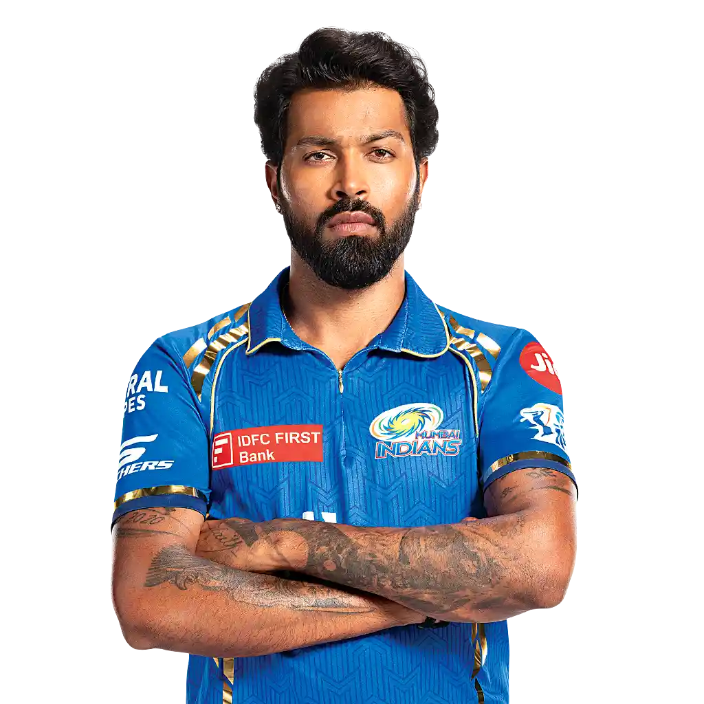
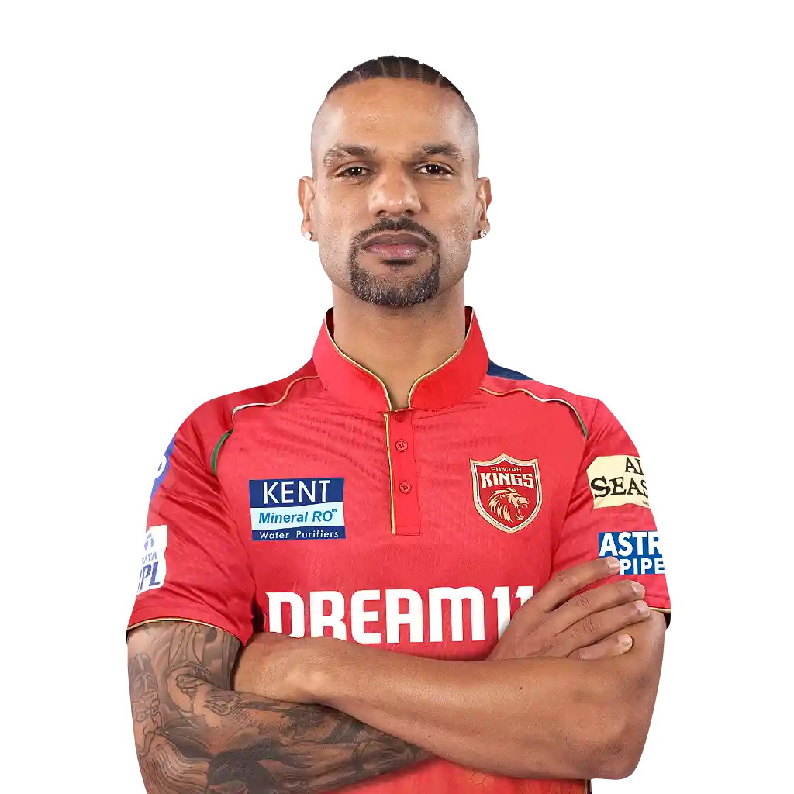
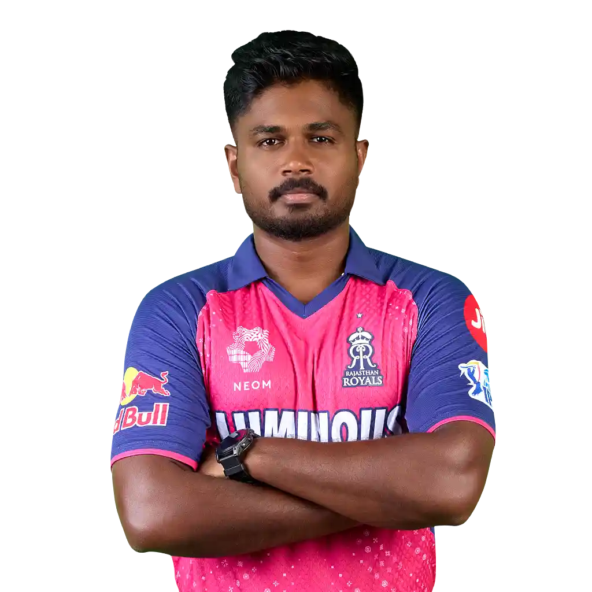
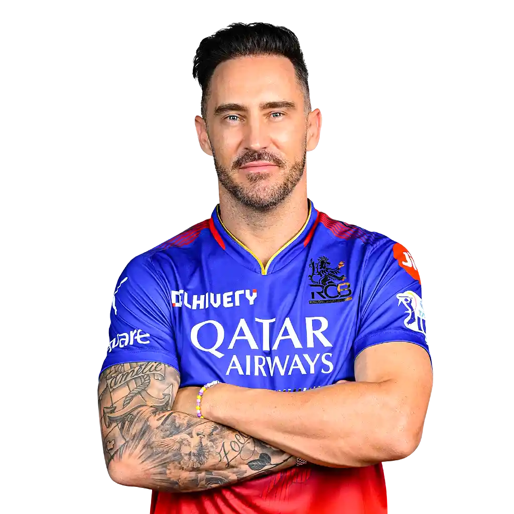

Home Ground: MA Chidambaram Stadium, Chennai (Chepauk)
Team Colors: Yellow and Blue
Titles: 5 (2010, 2011, 2018, 2021, 2023)
History and Legacy:
Chennai Super Kings is one of the most successful and consistent
franchises in IPL history.
Under the leadership of MS Dhoni, the team has built a reputation
for being calm under pressure, making them formidable in crunch
situations.
CSK has made the playoffs in almost every season they've
played, showcasing their dominance and consistency.
They were banned for two years (2016-17) due to a betting scandal
but made a triumphant return in 2018 by winning the IPL title.
Key Players (Past and Present):
MS Dhoni (Captain/Wicketkeeper): A cricketing legend known for his
leadership, Dhoni is the face of CSK. His calm demeanor and tactical
genius have been pivotal in CSK's success.
Suresh Raina: One of CSK's most loyal players and a consistent
performer until his retirement.
Ravindra Jadeja: A key all-rounder, Jadeja has been instrumental in
both batting and bowling.
Dwayne Bravo: The highest wicket-taker in IPL history, Bravo has
been a lethal weapon in death bowling and a handy lower-order
batsman.
Notable Achievements:
CSK has qualified for the playoffs in all but one of the IPL seasons
they have played.
Known for their "Dad's Army" team in 2018, with experienced
players like Shane Watson, Bravo, and Dhoni, CSK defied age and
expectations to win the title.
🏏Delhi Capitals (DC)
Delhi Capitals (DC)
Founded: 2008 (formerly Delhi Daredevils)
Owner: GMR Group and JSW Group
Captain: David Warner
Coach: Ricky Ponting
Home Ground: Arun Jaitley Stadium, Delhi
Team Colors: Blue and Red
Titles: None (Runners-up: 2020)
History and Legacy:
Delhi Capitals rebranded in 2018 from Delhi Daredevils and have since been
much more competitive.
Their 2020 season was their most successful,
finishing as runners-up.
The franchise has a strong focus on young Indian talent combined with
experienced international players, creating a balanced squad.
They have developed a reputation for investing in emerging players like
Rishabh Pant, Prithvi Shaw, and Shreyas Iyer.
Key Players (Past and Present):
Rishabh Pant (Wicketkeeper-Batsman): A dynamic and
explosive batsman, Pant has led the team and is considered the future of
Indian cricket.
Shikhar Dhawan: A consistent top-order
batsman and a former player who brought stability to their line-up.
Kagiso Rabada: A key fast bowler who was crucial to their
bowling success, now with Punjab Kings.
Notable Achievements:
Reaching the finals in 2020, where they were beaten by Mumbai Indians.
Known for developing young talent like Pant, Shaw, and Avesh Khan.
🏏Gujarat Titans (GT)
Gujarat Titans (GT)
Founded: 2021
Owner: CVC Capital Partners
Captain: Shubman Gill
Coach: Ashish Nehra
Home Ground: Narendra Modi Stadium, Ahmedabad
Team Colors: Dark Blue and Gold
Titles: 1 (2022)
History and Legacy:
Gujarat Titans made an immediate impact in their debut season in IPL 2022,
winning the title under the leadership of Hardik Pandya.
They quickly became one of the most balanced teams in the league, with a
strong core of Indian and international players.
Their success was built on strategic gameplay, with Pandya's
leadership being key.
Key Players (Past and Present):
Hardik Pandya (Captain/All-rounder): Pandya led from the
front with his all-round performances, playing a crucial role in GT's
title-winning season.
Shubman Gill: A rising star in Indian cricket, Gill has
been a consistent run-scorer at the top of the order for GT.
Rashid Khan One of the best spinners in the world,
Rashid was a key player in GT's success, delivering with both bat and
ball.
Notable Achievements:
Gujarat Titans won the IPL title in their debut season in 2022, defeating
Rajasthan Royals in the final.
Their balanced squad and strong leadership made them a formidable team
right from the start.
🏏Kolkata Knight Riders (KKR)
Kolkata Knight Riders (KKR)
Founded: 2008
Owner: Red Chillies Entertainment (Shah Rukh Khan, Juhi
Chawla, Jay Mehta)
KKR is a franchise known for its strong brand value, largely due to the
involvement of Bollywood star Shah Rukh Khan.
The team struggled in the early years but found success under the
captaincy of Gautam Gambhir, winning two IPL titles in 2012 and 2014.
They are known for their balanced squad and effective use of spinners,
especially at their home ground in Kolkata.
Key Players (Past and Present):
Andre Russell (All-rounder): One of the most powerful
hitters in T20 cricket, Russell is a match-winner with both bat and
ball.
Sunil Narine: A mystery spinner who has been KKR's
go-to bowler, Narine has also contributed as a pinch-hitter.
Gautam Gambhir: Led KKR to their two IPL titles and was
one of the most successful captains in the league.
Notable Achievements:
KKR won their two IPL titles in 2012 and 2014, with Gambhir playing a
crucial role in both campaigns.
Known for using spin bowlers effectively, particularly at Eden Gardens,
which traditionally supports spin.
🏏Lucknow Super Giants (LSG)
Lucknow Super Giants (LSG)
Founded: 2021
Owner: RPSG Group (Sanjiv Goenka)
Captain: KL Rahul
Coach: Andy Flower
Home Ground: Bharat Ratna Shri Atal Bihari Vajpayee Ekana Cricket Stadium, Lucknow
Team Colors: Light Blue
Titles: None (debuted in 2022)
History and Legacy:
Lucknow Super Giants made their debut in IPL 2022 as one of two new
franchises.
Owned by the RPSG Group, the team is captained by KL Rahul, who brought a
wealth of experience from his time with Punjab Kings.
They have quickly established themselves as a competitive side, with a
strong balance of international stars and promising young talent.
Key Players (Past and Present):
KL Rahul (Captain/Batsman): One of the most consistent
batsmen in IPL history, Rahul's leadership and batting form the
backbone of LSG.
Marcus Stoinis: A powerful all-rounder, Stoinis is a key
player for the Super Giants in both departments.
Quinton de Kock: The South African wicketkeeper-batsman
provides explosive starts for LSG at the top of the order.
Notable Achievements:
LSG impressed in their debut season, reaching the playoffs in 2022.
Known for having a well-balanced squad with both experienced players and
young talent.
🏏Mumbai Indians (MI)
Mumbai Indians (MI)
Founded: 2008
Owner: Reliance Industries (Mukesh Ambani)
Captain: Rohit Sharma (2013-present)
Coach: Mark Boucher
Home Ground: Wankhede Stadium, Mumbai
Team Colors: Blue and Gold
Titles: 5 (2013, 2015, 2017, 2019, 2020)
History and Legacy:
Mumbai Indians are the most successful team in IPL history, having won
five titles.
Their rise to prominence came after Rohit Sharma took over the captaincy
in 2013.
Known for their balanced and star-studded line-up, MI boasts incredible
squad depth in both batting and bowling departments.
Their focus on scouting young talent and nurturing it alongside big
international names has been key to their dominance.
Key Players (Past and Present):
Rohit Sharma (Captain/Batsman): Rohit is one of the most
successful IPL captains and a top-order batsman with an exceptional
ability to pace his innings.
Kieron Pollard: One of the most destructive all-rounders,
Pollard's explosive batting and ability to bowl key overs have been
critical.
Jasprit Bumrah: Arguably the best death bowler in the
world, Bumrah's accuracy and ability to deliver under pressure make
him a game-changer.
Hardik Pandya: Before moving to Gujarat Titans, Hardik
was a key player for MI with his all-round abilities.
Notable Achievements:
MI has won the IPL title five times, the most by any team, with
back-to-back wins in 2019 and 2020.
Known for making strong comebacks in the second half of the season and
being a dominant force in knockout matches.

🏏Punjab Kings (PBKS)

Punjab Kings (PBKS)
Founded: 2008 (formerly Kings XI Punjab)
Owner: Preity Zinta, Ness Wadia, Mohit Burman
Captain: Shikhar Dhawan
Coach: Trevor Bayliss
Home Ground: PCA Stadium, Mohali
Team Colors: Red and Silvere
Titles: None (Runners-up: 2014)
History and Legacy:
Punjab Kings, formerly known as Kings XI Punjab, have been one of the more
inconsistent teams in IPL history.
Despite flashes of brilliance, including a runners-up finish in 2014, they
have failed to secure a title.
They are known for their attacking brand of cricket, with a focus on
explosive batting and fast bowling.
Key Players (Past and Present):
Shikhar Dhawan (Captain/Batsman): A veteran opener,
Dhawan brings experience and stability at the top of the order.
KL Rahul: Before leaving for Lucknow Super Giants, Rahul
was their top performer and captain.
Chris Gayle: The "Universe Boss" was a key player for
Punjab, providing explosive starts with his power hitting.
Notable Achievements:
Finished runners-up in 2014, losing a thrilling final to KKR
Known for producing entertaining matches with high-scoring games, largely
due to players like Gayle, Maxwell, and Rahul.
🏏Rajasthan Royals (RR)
Rajasthan Royals (RR)
Founded: 2008
Owner: Emerging Media IPL Ltd (Manoj Badale, Lachlan
Murdoch)
Captain: Sanju Samson
Coach: Kumar Sangakkara
Home Ground: Sawai Mansingh Stadium, Jaipur
Team Colors: Pink and Blue
Titles: 1 (2008)
History and Legacy:
Rajasthan Royals were the winners of the inaugural IPL season in 2008
under the captaincy of Shane Warne.
Since then, they have been inconsistent but are known for promoting young
Indian talent.
The team has a strong focus on scouting uncapped players and turning them
into stars.
Despite their unpredictable performances, they are always competitive.
Key Players (Past and Present):
Sanju Samson (Captain/Batsman): A highly talented batsman
and wicketkeeper, Samson leads the team with flair.
Jos Buttler: One of the most dangerous openers in T20
cricket, Buttler has consistently delivered big performances for RR.
Shane Warne: The legendary Australian spinner captained
and coached the team to their only IPL title in 2008.
Notable Achievements:
Won the inaugural IPL season in 2008 against all odds.
Known for grooming young talents like Sanju Samson, Yashasvi Jaiswal, and
Riyan Parag.

🏏Royal Challengers Bengaluru (RCB)

Royal Challengers Bangalore (RCB)
Founded: 2008
Owner: United Spirits (Diageo)
Captain: Faf du Plessis (2022-present)
Coach: Andy Flower
Home Ground: M. Chinnaswamy Stadium, Bengaluru
Team Colors: Red, Black, and Gold
Titles: None (Runners-up: 2009, 2011, 2016)
History and Legacy:
RCB is one of the most popular IPL franchises, known for its massive fan
base, but they have struggled to secure an IPL title despite having
several star-studded line-ups.
The team has had close calls, finishing runners-up three times, but they
are often criticized for inconsistency.
RCB is known for its powerful batting line-up, often featuring explosive
hitters.
Key Players (Past and Present):
Virat Kohli (Batsman): Kohli has been the backbone of
RCB's batting for years and holds the record for the most runs in IPL
history.
AB de Villiers: A dynamic and innovative batsman, De
Villiers was known for his ability to turn matches with his incredible
stroke play.
Faf du Plessis: Current captain and a solid top-order
batsman with vast experience in international cricket.
Notable Achievements:
RCB's best seasons came in 2011 and 2016 when they reached the final
but fell short.
Kohli's 973-run season in 2016 remains the highest individual tally
in a single IPL season.
🏏Sunrisers Hyderabad (SRH)
Founded: 2012 (replacing Deccan Chargers)
Owner: Owner: Sun TV Network
Captain: Pat Cummins
Coach: Daniel Vettori
Home Ground: Rajiv Gandhi International Cricket Stadium,
Hyderabad
Team Colors: Orange and Black
Titles: 1 (2016)
History and Legacy:
Sunrisers Hyderabad (SRH) was founded in 2012, replacing Deccan Chargers.
Known for their strong bowling attack, SRH won their first IPL title
in 2016 under the captaincy of David Warner.
SRH has consistently reached the playoffs and is known for its balanced
squad with a focus on bowling, especially fast bowling and spin.
Key Players (Past and Present):
David Warner: Warner was one of the most successful captains and batsmen
for SRH, leading them to their 2016 IPL title.
Rashid Khan: One of the best T20 spinners globally, Rashid was pivotal in
SRH's success during his tenure.
Bhuvneshwar Kumar: Known for his swing bowling and death-overs expertise,
Bhuvneshwar has been a constant in SRH's bowling attack.
Notable Achievements:
SRH won the IPL title in 2016, defeating RCB in a high-scoring final.
Known for their ability to defend low totals, thanks to their strong
bowling line-up.